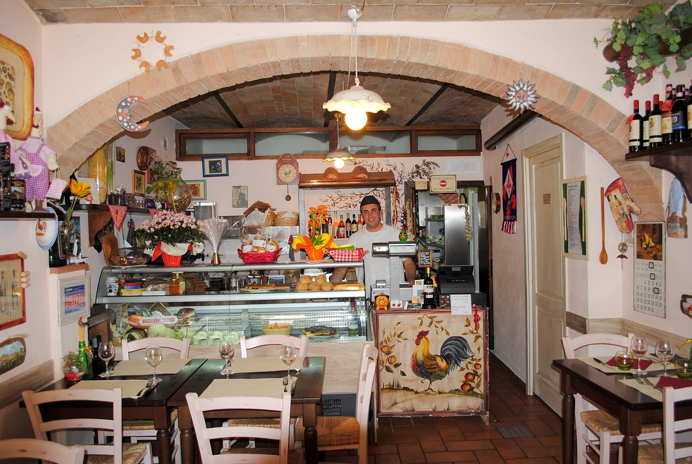
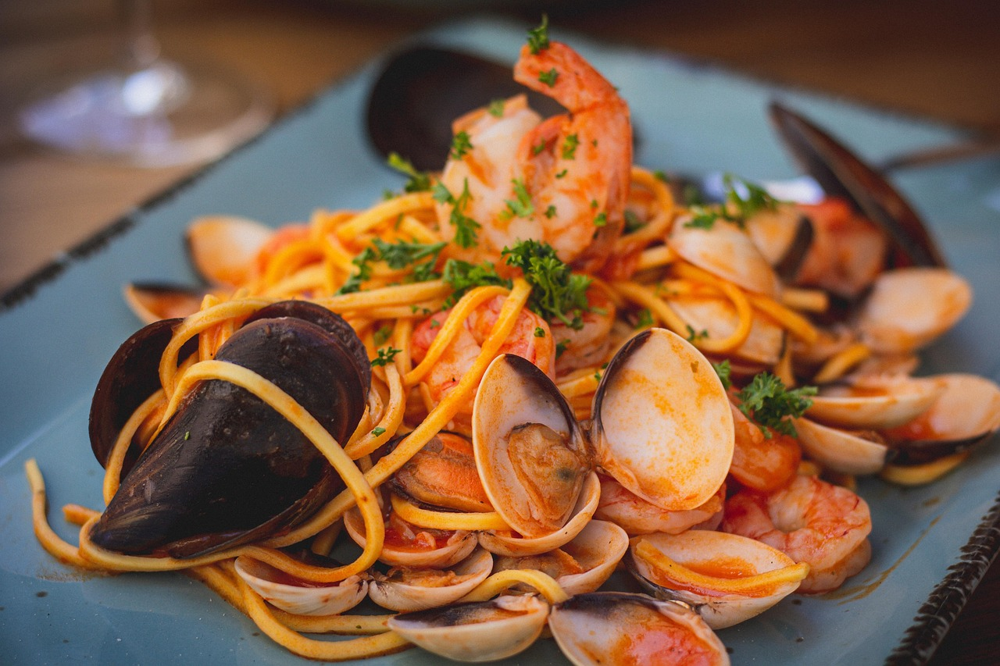
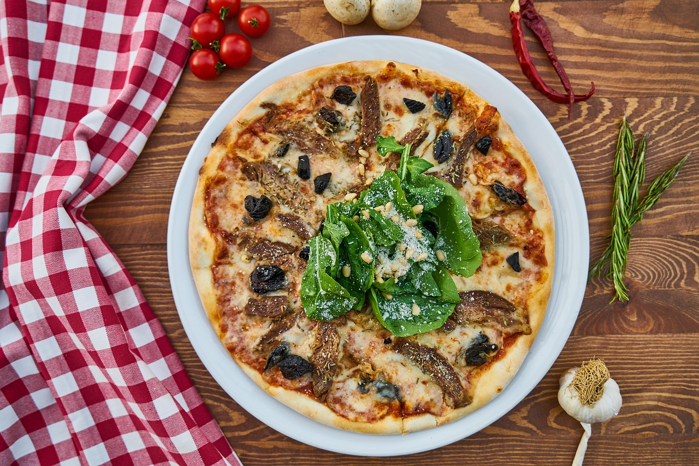
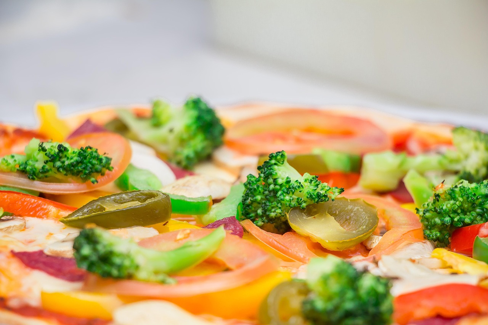

Arome autentice, pasiune italiană
Trattoria Soleto aduce Italia în inima orașului.

Rețete autentice
Doar ingrediente italiene veritabile
Vinuri selecte
Selecție dedicată de vinuri italienești
Atmosferă relaxantă
Perfect pentru mese cu prietenii

Trattoria Soleto
La Trattoria Soleto, fiecare masă e o incursiune în bucătăria tradițională italiană. Folosim ingrediente proaspete și rețete autentice pentru a-ți oferi o experiență culinară inedită. Primește-te cu o atmosferă prietenoasă, gusturi intense și preparate ca în Italia.
Meniu
Câteva imagini



Animații avansate
Pagini interactive cu animații fluide pentru meniul și prezentarea restaurantului, efecte vizuale moderne la tranzitarea secțiunilor, animații de apariție pentru preparate și prezentarea ingredientelor.
Galerie cu poze reale
Meniul include fotografii reale, de înaltă calitate, ale preparatelor noastre, fiecare categorie având imagini autentice pentru claritate și inspirație.